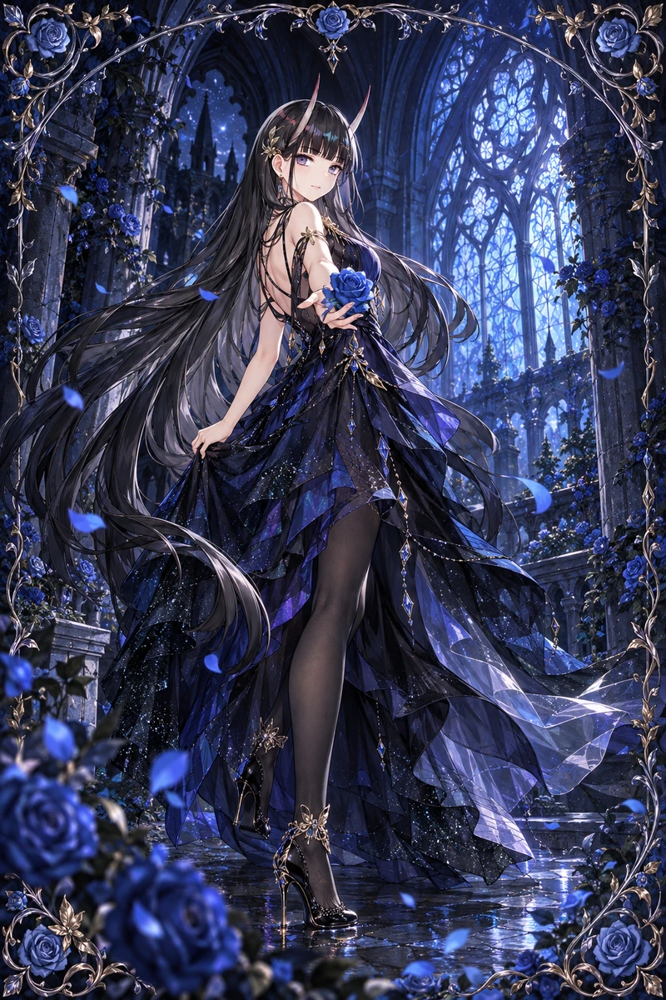

先发生故事，再添加装饰
给角色视线、行动与情绪。侧脸、背影、低头和安静的空庭，都比重复的正脸微笑更有记忆。
THE ART OF COLLECTIBLE CARDS / 01
从一个有故事的眼神，到沿边缘生长的花藤。
把叙事、镭射与深度，做成恰如其分的工艺。

01 / SELECTED CARDS
保留完整画面与原有比例。
点击放大，可查看对应卡背。
正在布置作品……
展示使用已完成作品的轻量预览。网页中的倾斜与反光是整卡展示交互，不代表人物几何浮雕；制作完整镭射／分层场景请使用下方 Skill。
02 / THE CRAFT
给角色视线、行动与情绪。侧脸、背影、低头和安静的空庭，都比重复的正脸微笑更有记忆。
蔷薇、珊瑚、青花瓷与雨灯各有语言。用连续雕纹和材料细节建立精致度，把主要面积留给画面。
镭射跟随视角，深度来自真实的层与网格。保护肤色、发丝和镂空，让光帮助阅读，而非盖住原画。
03 / MAKE YOUR OWN
可安装的 Codex Skill，包含 Blender 场景、Three.js 查看器、资源检查工具与制作参考。沿用 RuiC 的 MIT 流水线，再加入这批卡片中总结出的审美与质量判断。
提供可编辑代码与指南；不附 Luma 私有应用源码、模型服务或自动生成额度。具体效果仍需制作资源并逐张检查。
~/.codex/skills/luma-card-craft/“用 $luma-card-craft 制作一张
海蓝珊瑚主题的收藏卡。
先设计动作和镜头，
边框细而精，镭射随视角变化。”
04 / SHARE WITH CARE
CC BY-NC-SA 4.0：署名、非商业使用、相同方式共享；仅在发布者持有权利的范围内授权。
PolyForm Noncommercial 1.0.0。允许许可范围内的学习、修改与非商业使用，商业用途不在本次授权内。
RuiC / HRuiCcc 的代码保留 MIT；Three.js、图标等保留各自原许可，不能用本项目的禁商用要求改写它们。
本项目属于“源码公开、非商业共享”，不是 OSI 定义的开源软件。AI 辅助作品不意味着每个像素均具排他版权，也不授权第三方商标、肖像或参考素材。详见 许可范围 与 第三方说明。